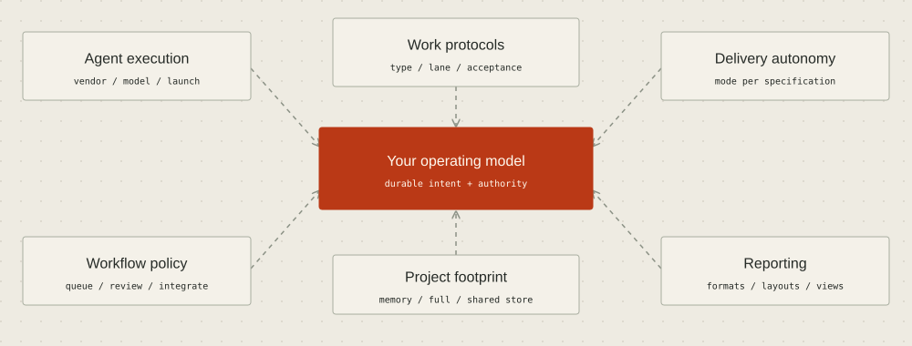

THE GOVERNED SOFTWARE FACTORY
Configure the way your team works

AIDA separates what work means, how it is dispatched and who may authorize its next step. You can start with conversational development and configure more delegation for selected work. Configuration is a product capability: teams can choose agent profiles, execution modes, work protocols and presentation preferences without adopting one fixed operating pattern.
Six places to make a choice
- Per-spec execution mode:
operator,guided,drive,drainanddecidedescribe different human involvement contracts. They do not grant roles or merge authority. Use the overview andaida do --helpto inspect the dispatch contract. - Agent and launch defaults: supported managed launchers include Claude Code, Codex and Antigravity. Machine and project
agents.tomlfiles carry vendor defaults. The launch commands support vendor-specific options; model names are opaque pass-through values, not AIDA validation of model availability. Effort, permission flags and containment support differ between harnesses. - Work protocols: editable META requirements tagged
protocol:<type>define type guidance. Optionalprotocol:lane:<lane>overlays tailor research, documentation or consequential design work. Useaida protocol listto inspect installed protocols. If the store has none, an operator can install defaults withaida protocol seed; then useaida protocol show task --lane docsto inspect the actual text before changing it. - Workflow policy: project settings control such features as protocol enforcement, drain behavior and required CI treatment. Read the relevant command help and lifecycle reference before editing policy. Changing documentation or guidance does not replace a runtime authority check.
- Project footprint: full, minimal and memory-lane footprints select how much scaffolding a project adopts.
aida init --footprint memory-laneinstalls the store and reflex capture/learn guidance;--footprint minimalinstalls store/config/cache without that guidance. The distinct--minimaldemonstration option is not the same as--footprint minimal. - Reporting preferences: history layouts, output format, workflow hints and glyphs let operators and agents choose useful views.
aida history --helpdescribes named/inline templates;aida config hints,aida config glyphand the global--formatoption address different surfaces. A presentation setting does not change spec identity or authority.
Scope is feature specific
There is no universal precedence ladder for every AIDA setting. Read each feature's contract.
Agent defaults are read from machine ~/.aida/agents.toml and project .aida/agents.toml; individual readers determine merging and overrides. Default-flag lists and scalar permission fields do not necessarily combine the same way. aida config permissions show reports the effective launch posture. The interactive configuration menu needs a terminal; command help and read-only inspection remain available to non-TTY agents.
Spec execution mode and META protocols belong to the requirements graph. Project guidance and policy files live with their documented project scope. Clone-local allocation and transport settings belong to the clone's common Git directory; linked worktrees share that clone state. Machine preferences and grants have their own local scope and trust rules. Copying a project config file does not copy a live grant, and a friendly ID alias does not confer authority.
Guidance and enforcement are different
Protocol precedence is type, then lane, then spec acceptance. Pickup carries labeled guidance with a combined 40-line body cap; a long protocol is not an unlimited instruction channel. The compact per-turn notice repeats type guidance while the spec lease is held. The CLI and MCP protocol resource expose the same rendered text.
The prose protocol is guidance. Only specifically implemented machine checks enforce protocol deliverables; the default protocol enforcement posture is warn. A claim that all written instructions are enforced would be incorrect. Reviewers still evaluate acceptance and evidence.
Explore a policy request
For routine documentation you might ask: "Use our preferred agent, preserve independent review, and let approved bounded work proceed with minimal interruption." For a sensitive design change: "Keep the design conversation interactive and require the accountable person's decision."
These are illustrative requests, not live configuration writes or complete configuration recipes. Ask the agent to inspect current settings, identify the exact supported knobs and propose a reviewable change. Confirm the affected scope before applying it. AIDA's permission posture and role authority remain separate from the amount of conversation you select.
Inspect before you change
aida init --help
aida do --help
aida protocol list
# If defaults have not been installed, run: aida protocol seed
aida protocol show task --lane docs
aida config permissions show
aida agent new codex --help
aida agent new claude --help
aida agent new antigravity --help
aida history --helpThe setup reference, roles and sessions and reporting reference contain the operational details. Configuration should fit your team while preserving the source-backed limits of each feature.